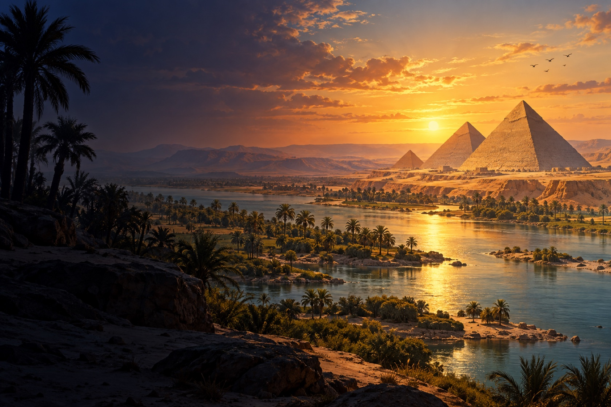

As pirâmides de Gizé
As pirâmides de Quéops, Quéfren e Miquerinos foram construídas durante a 4ª dinastia, aproximadamente entre 2600 e 2500 a.C. A Grande Pirâmide de Quéops é a única das Sete Maravilhas do Mundo Antigo que ainda permanece em grande parte de pé.
Erguer um monumento desse porte exigiu planejamento, transporte de materiais e muitos trabalhadores. Escavações encontraram um assentamento ligado à construção dos complexos de Quéfren e Miquerinos, com vestígios de moradias e alimentação. Por isso, é simplista repetir a ideia de que as pirâmides foram construídas apenas por pessoas escravizadas.
A Esfinge: a Grande Esfinge guarda o planalto de Gizé. Sua associação com o faraó Quéfren é comum entre pesquisadores, embora detalhes sobre sua construção e função ainda sejam debatidos.

Faça um tour pelas imagens
Acompanhe detalhes de uma cabeça real, de sinais talhados em pedra e de uma imagem de Osíris. Abra as fichas para ver contexto, datação e créditos do acervo.
Abrir tour 3D da Pirâmide de Quéops · Harvard ↗
O tour interativo foi desenvolvido pelo Giza Project, da Universidade Harvard, e requer internet.